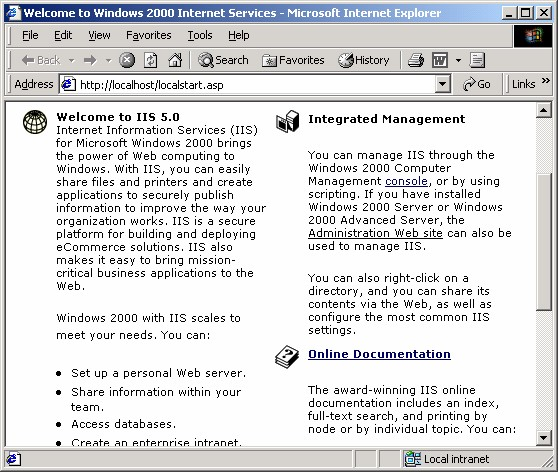

5 Mengatur tata letak dengan tabel
Membuat halaman web tidak sepenuhnya sama dengan membuat dokumen pengolah
kata. Ada beberapa keterbatasan, terutama dalam hal pengaturan tata letak. Anda
tidak akan bisa membuat teks dengan susunan kolom pada halaman web, tidak
seperti pada MS Word misalnya. Hal seperti ini disebabkan oleh minimnya tag
HTML untuk keperluan seperti itu.
Sebagai penggantinya, Anda bisa menggunakan tabel untuk membagi halaman
menjadi beberapa area. Dengan tabel Anda dapat menghasilkan beragam jenis tata
letak, mencampur gambar dan teks dalam berbagai komposisi.
Dan untuk menghilangkan kesan kaku, Anda bisa menyembunyikan garis-garis
tabel, dengan cara membuat nilai border tabel menjadi (0) nol. Selanjutya Anda
tinggal menempatkan objek-objek lain di dalam sel yang kini berupa suatu area.
Aturlah sel itu agar Anda dapat menempatkan semua objek, seperti teks, gambar atau
objek lainya pada posisi yang Anda inginkan. Ubahlah perataannya, sesuaikan
ukuran sel, kalau perlu pecahlah sel menjadi beberapa bagian, satukan beberapa sel
menjadi sebuah sel, hapuslah sel yang tidak diperlukan, atau tambahkan sel baru, dan
sebagainya. Anda dapat menempatkan objek- objek tersebut di dalam sel tanpa
membuat pemakai menyadari bahwa dia sedang melihat sebuah tabel.
Perhatikan contoh berikut ini (Gambar 9.20), sebuah halaman yang sedang dibuka
oleh Internet Explorer. Susunan tersebut dihasilkan oleh sebuah tabel dengan nilai
border = 0 sehingga tidak tampak garis tabelnya.

Gambar 9.20 Tata letak dengan tabel tidak tampak
Jika garis tabel dimunculkan, maka hasilnya akan seperti Gambar 9.20.
Gambar 9.21 Tata letak dengan tabel tampak
Untuk memunculkan garis tabel, tentu saja kita harus mengedit halaman tersebut.
Dengan FrontPage XP tentunya. Setelah mengedit simpanlah dan kembali ke
Internet Explorer. Tekan tombol Refresh, ops muncullah Gambar 9.20 di atas.
Anda dapat membuat tabel di dalam tabel lain, dan menyediakan fleksibilitas yang
lebih tinggi dalam pengaturan tataletak halaman. Contohnya perhatikan Gambar
9.20, garis terluar yang mengelilingi tabel adalah juga sebuah tabel.
Untuk membuat tabel di dalam sebuah tabel, caranya klik saja area pada sebuah sel,
kemudian buatlah tabel baru dengan tombol Insert Table atau menu Table _
Insert Table . Gambar 9.21 juga menunjukkan contoh tabel di dalam tabel.
Selanjutnya Anda bisa memformat tabel tersebut seperti biasa. Perhatikan, bahwa
pada saat Anda menentukan lebar tabel dengan ukuran persentase, pengaturan ini
juga berlaku pada sel yang ada pada tabel itu. Artinya ukuran sel akan mengikuti
ukuran tabel.
Gambar 9.22 Tabel di dalam tabel
Copyright © Herlan Lesmana
Created with the Freeware Edition of HelpNDoc: Easily create CHM Help documents